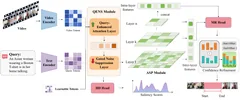

Boundary-aware Multimodal Alignment Network for Video Temporal GroundingBoundary-aware Multimodal Alignment Network for Video Temporal Grounding
ACM TOMM 投稿ACM TOMM submission返修Under revision
针对视频时刻检索中的跨模态对齐噪声与片段边界模糊，设计查询增强和多尺度时序建模网络。Addresses noisy language–video alignment and ambiguous segment boundaries in temporal video grounding through query enhancement and multi-scale temporal modeling.